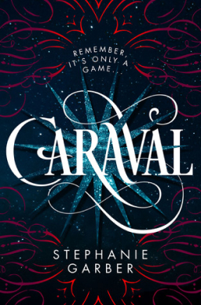

-
we were liars - e. lockhart
A beautiful and distinguished family.
A private island.
A brilliant, damaged girl; a passionate, political boy.
A group of four friends—the Liars—whose friendship turns destructive.
A revolution. An accident. A secret.
Lies upon lies.
True love.
The truth.
-

caraval - stephanie garber
A legendary competition.
A mesmerizing romance.
An unbreakable bond between two sisters.
Scarlett Dragna has never left the tiny island where she and her sister, Tella, live with their powerful, and cruel, father. Now Scarlett’s father has arranged a marriage for her, and Scarlett thinks her dreams of seeing Caraval—the faraway, once-a-year performance where the audience participates in the show—are over.
But this year, Scarlett’s long-dreamt-of invitation finally arrives. With the help of a mysterious sailor, Tella whisks Scarlett away to the show. Only, as soon as they arrive, Tella is kidnapped by Caraval’s mastermind organizer, Legend. It turns out that this season’s Caraval revolves around Tella, and whoever finds her first is the winner.
Scarlett has been told that everything that happens during Caraval is only an elaborate performance. Nevertheless she becomes enmeshed in a game of love, heartbreak, and magic. And whether Caraval is real or not, Scarlett must find Tella before the five nights of the game are over or a dangerous domino effect of consequences will be set off, and her beloved sister will disappear forever.
Welcome, welcome to Caraval . . . beware of getting swept too far away. -
one of us is lying - karen mcmanus
Pay close attention and you might solve this.
On Monday afternoon, five students at Bayview High walk into detention.
Bronwyn, the brain, is Yale-bound and never breaks a rule.
Addy, the beauty, is the picture-perfect homecoming princess.
Nate, the criminal, is already on probation for dealing.
Cooper, the athlete, is the all-star baseball pitcher.
And Simon, the outcast, is the creator of Bayview High's notorious gossip app.
Only, Simon never makes it out of that classroom. Before the end of detention, Simon's dead. And according to investigators, his death wasn't an accident. On Monday, he died. But on Tuesday, he'd planned to post juicy reveals about all four of his high-profile classmates, which makes all four of them suspects in his murder. Or are they the perfect patsies for a killer who's still on the loose?
Everyone has secrets, right? What really matters is how far you would go to protect them. -
red queen - victoria aveyard
This is a world divided by blood—red or silver. The Reds are commoners, ruled by a Silver elite in possession of god-like superpowers. And to Mare Barrow, a seventeen-year-old Red girl from the poverty-stricken Stilts, it seems like nothing will ever change. That is until she finds herself working in the Silver Palace. Here, surrounded by the people she hates the most, Mare discovers that, despite her red blood, she possesses a deadly power of her own. One that threatens to destroy the balance of power. Fearful of Mare's potential, the Silvers hide her in plain view, declaring her a long-lost Silver princess, now engaged to a Silver prince.
-
they both die at the end - adam silvera
On September 5, a little after midnight, Death-Cast calls Mateo Torrez and Rufus Emeterio to give them some bad news: They’re going to die today.
Mateo and Rufus are total strangers, but, for different reasons, they’re both looking to make a new friend on their End Day. The good news: There’s an app for that. It’s called the Last Friend, and through it, Rufus and Mateo are about to meet up for one last great adventure—to live a lifetime in a single day. -
the song of achilles - madeline miller
Greece in the age of heroes. Patroclus, an awkward young prince, has been exiled to the court of King Peleus and his perfect son Achilles. By all rights their paths should never cross, but Achilles takes the shamed prince as his friend, and as they grow into young men skilled in the arts of war and medicine their bond blossoms into something deeper - despite the displeasure of Achilles' mother Thetis, a cruel sea goddess. But then word comes that Helen of Sparta has been kidnapped. Torn between love and fear for his friend, Patroclus journeys with Achilles to Troy, little knowing that the years that follow will test everything they hold dear.
Profoundly moving and breathtakingly original, this rendering of the epic Trojan War is a dazzling feat of the imagination, a devastating love story, and an almighty battle between gods and kings, peace and glory, immortal fame and the human heart.